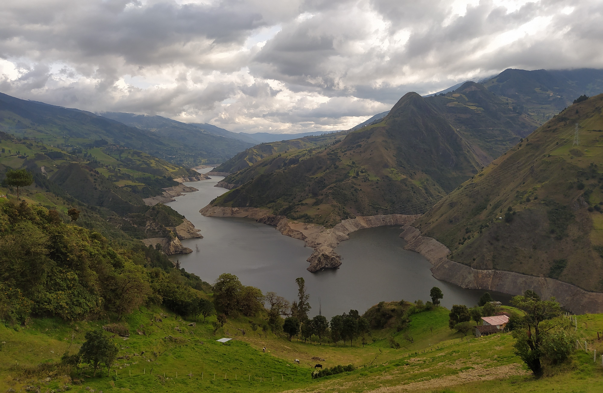
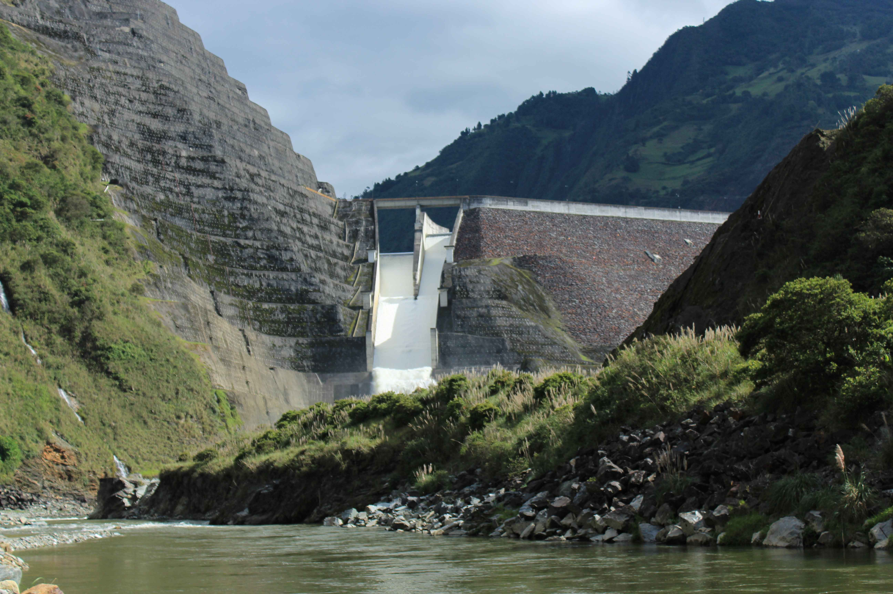
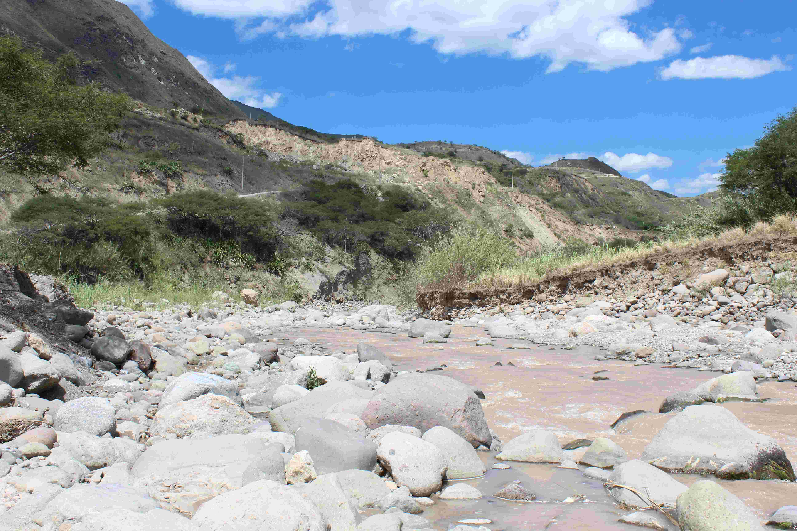

Campaign #2
18/10/2023 - 10/11/2023
 The second campaign is running and expected to end on 10 November 2023! The experiences of the first campaign came in handy to access the selected sampling sites and organise the logistics of the field visits in an efficient manner. Surprisingly, the study area (and Ecuador in general) is facing the worst drought of the last four decades, causing the levels of the reservoirs to be exceptionally low. Also water levels within the rivers are lower than observed during the first campaign. We'll definitely need more time to bring all the data together.
Campaign #1
11/07/2023 - 10/08/2023
 The first campaign is a fact! We have been out and about to collect the desired data from a selection of sites. Unfortunately, there is a clear difference between accessibility based on a map and the actual situation. Several times we were faced with the necessity to cancel a location and look for an alternative. Luckily, in the end we were able to find 49 accessible sites: 30 river/stream sites and 19 reservoir sites. The fieldwork is over, but we'll definitely need more time to bring all the data together and to process all the macroinvertebrate samples. This means a lot of sample cleaning and picking out all macroinvertebrates that we can find. One observation so far: there is more life in the selected sites than expected!
Start of the HydroCORE project
01 July 2023
 The project has officially started and will take place in Cuenca (Ecuador) for the following two years (up to 30 June 2025). Ecuador is currently affected by political instability and increased drug-related criminality, though Cuenca seems to remain less affected. There will not be much time to lose, because the first sampling campaign will already start on 11 July! Simultaneously, two other projects of the research group Aquatic Ecology of Ghent University are taking place: one related to greenhouse gas emissions and the effect of urbanization and one related to greenhouse gas emissions of the lakes and ponds in the Cajas national park. During these campaigns, experiences will be shared as well as workforce.